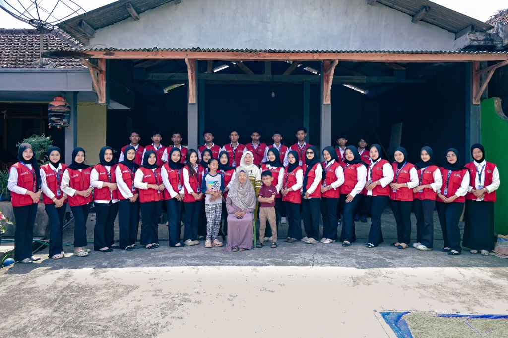

Profil Desa Dongko
Mengenal lebih dekat potensi geografis, demografis, dan pesona masyarakat Desa Dongko.
Desa Dongko merupakan desa dataran tinggi dengan luas wilayah sekitar 1.500 hektare dan jumlah penduduk mencapai 11.153 jiwa. Wilayahnya terbagi menjadi 7 dusun, 71 RT, dan 14 RW, dengan kondisi geografis berupa perbukitan yang dipisahkan oleh pegunungan. Mayoritas masyarakat bekerja sebagai petani dan pekebun, selain itu terdapat pula pegawai negeri, TNI, Polri, pengusaha, dan pengrajin. Desa Dongko memiliki potensi unggulan berupa UMKM, kerajinan bambu, peternakan Kambing Etawa, serta produk pertanian.
Selain potensi ekonomi, Desa Dongko juga memiliki budaya dan adat istiadat yang masih dijaga hingga kini. Salah satunya adalah Ngitung Batih, yang dilaksanakan setiap 1 Suro sebagai momentum menghitung cacah jiwa, bersyukur kepada Allah SWT, serta menggelar pentas seni budaya. Pelestarian budaya terus dilakukan melalui kegiatan rutin masyarakat, lingkungan sekolah, dan berbagai lembaga pendidikan. Pemerintah desa berharap budaya seni, gotong royong, kebersihan, dan kepedulian terhadap lingkungan terus dijaga agar masyarakat Dongko dapat hidup dengan tertib, damai, dan nyaman.
Sejarah Desa Dongko
Jejak masa lalu yang mengukir identitas dan melahirkan nama Desa Dongko.
Perkembangan Pasar
Pada masa penjajahan Belanda, wilayah ini menjadi bagian dari perkembangan kawasan pasar. Tercatat adanya pasar yang mulai berdiri sekitar tahun 1919, yang turut menjadi bagian penting dari denyut nadi perekonomian dan perjalanan sejarah desa.
Pohon Bendo & Nangka
Menurut cerita turun-temurun, dahulu terdapat pohon Bendo dan Nangka yang tumbuh berdampingan di wilayah selatan desa. Tempat ini sangat rindang dan sejuk sehingga sering dijadikan tempat berteduh. Dari gabungan nama pohon Bendo dan Nangka inilah, lahir sebutan Dongko.
Dongko Modern
Seiring berjalannya waktu, wilayah tersebut terus berkembang, mempertahankan warisan budaya agraris sembari merangkul kemajuan zaman, dan resmi dikenal sebagai Desa Dongko yang kita kenal sekarang.
Dongko Culture
Kekayaan seni dan tradisi lokal yang menjadi kebanggaan serta identitas warga Desa Dongko.
Ngitung Batih
Tradisi masyarakat Desa Dongko yang dilaksanakan setiap 1 Suro (1 Muharam) sebagai bentuk rasa syukur dan doa keselamatan. Diisi dengan menghitung anggota keluarga sebagai simbol eratnya kebersamaan, dan diakhiri dengan syukuran serta Ambeng.
Turonggo Yakso
Kesenian Jaranan khas Desa Dongko yang berakar dari tradisi agraris dan ritual Baritan. Menggambarkan perjuangan manusia melawan keburukan (Yakso/Raksasa). Kesenian ini kini telah menjadi salah satu identitas budaya utama Kabupaten Trenggalek.
Terbang Eloh
Kesenian musik tradisional yang menggunakan alat musik rebana, jedor, dan kendang panjang. Memiliki ciri khas vokal bernada tinggi dan melengking. Lirik dan tembangnya sarat akan pesan kebaikan serta nilai-nilai ajaran luhur budaya lokal.
Temukan Lokasi Penting di Desa Dongko
Jelajahi berbagai fasilitas, ruang publik, dan lokasi penting di sekitar Desa Dongko.
LEGENDA
Tim KKN UBHI 2026
Bersama membangun desa, merawat tradisi, dan mengembangkan potensi lokal untuk masa depan Dongko yang lebih cerah.

Ensiklopedia Dongko
Pelajari lebih dalam mengenai asal-usul, sejarah, kekayaan alam, serta potensi pertanian yang diwariskan dari generasi ke generasi.
Dokumenter Desa
Saksikan pesona alam dan keseharian warga Desa Dongko yang hijau dan asri melalui rekaman lensa kami.
@kknubhi26_dongko Pesona Desa_Dongko DONGKO CULTURE — Warisan yang Terus Hidup 🌾 Di Desa Dongko, budaya bukan sekadar cerita masa lalu. Ia tumbuh, diwariskan, dan terus hidup di tengah masyarakat. ✨ Ngitung Batih Tradisi yang dilaksanakan setiap 1 Suro atau 1 Muharam sebagai wujud rasa syukur dan doa keselamatan. Menghitung anggota keluarga menjadi simbol kebersamaan, keberadaan, dan eratnya hubungan antarwarga, yang dilengkapi dengan syukuran dan Ambeng. 🐎 Turonggo Yakso Kesenian khas Dongko yang berakar dari tradisi agraris dan ritual Baritan. Turonggo berarti kuda, sedangkan Yakso berarti raksasa—sebuah simbol perjuangan manusia melawan keburukan dan angkara murka. Dua tradisi, satu cerita: tentang identitas, kebersamaan, dan budaya yang terus diwariskan. 📍 Desa Dongko, Trenggalek 🎥 Dokumenter Dongko Culture #DongkoCulture #DesaDongko #Dongko #Trenggalek #NgitungBatih #TuronggoYakso #BudayaJawa #BudayaTrenggalek #KKNUBHI2026 #DokumenterBudaya #JelajahBudaya
♬ suara asli ARUNA MANDALA KKN DONGKO 26
Galeri Dokumentasi
Kumpulan momen, senyum, dan kerja keras selama kegiatan pengabdian kami di Desa Dongko.
Arsip Foto KKN
Akses seluruh dokumentasi kegiatan dari program KKN UBHI 2026 secara lengkap di Google Drive.
Buka Galeri Drive